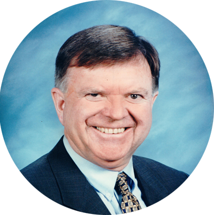

<!DOCTYPE html>
<html lang="en">
    <head>
        <meta charset="utf-8">
        <title>About Us</title>
        <meta content="width=device-width, initial-scale=1.0" name="viewport">
        <meta content="Grand Canal Solutions" name="description">
        <!-- Bootstrap  -->
        <link href="css/bootstrap.css" rel="stylesheet">
        <!-- Font Awesome  -->
        <link href="css/font-awesome.min.css" rel="stylesheet">
        <!-- Revolution Responsive jQuery Slider -->
        <link rel="stylesheet" type="text/css" href="css/settings.css" media="screen" />
        <!-- Landlr Style -->
        <link href="css/colors.css" rel="stylesheet">
        <link href="css/style.css" rel="stylesheet">
        <link href="css/responsive.css" rel="stylesheet"> 
        
        <!-- Favicon and touch icons  -->
        <link href="ico/gcfavicon130.png" rel="apple-touch-icon-precomposed" sizes="130x130">
        <link href="ico/gcfavicon70.png" rel="apple-touch-icon-precomposed" sizes="70x70">
        <link href="ico/gcfavicon.png" rel="shortcut icon">
        <link href='http://fonts.googleapis.com/css?family=Open+Sans:300,400italic,400,300italic,600,600italic,700' rel='stylesheet' type='text/css'>       
        <!-- HTML5 shim, for IE6-8 support of HTML5 elements -->
        <!--[if lt IE 9]>
      	<script src="js/html5shiv.js"></script>
    	<![endif]-->
    	
    	
    	
    </head>
    <body class="page-turquoise">
		<!--<div id="back">

		</div>
		 Navigation -->
		<header>
			<div class="navbar navbar-fixed-top">
				<div class="navbar-inner">
					<div class="container">
						<button type="button" class="btn btn-navbar" data-toggle="collapse" data-target=".nav-collapse">
							<span class="icon-bar"></span>
							<span class="icon-bar"></span>
							<span class="icon-bar"></span>
						</button>
                                            <a class="brand" href="index.html"></a>
						<div class="nav-collapse collapse">
							<ul class="nav pull-right">
								<li><a href="index.html">HOME</a></li>
								<li><a href="#row2">BENEFIT</a></li>
								<li><a href="#row4">PRODUCT</a></li>
								<li class="current-page"><a href="about.html">ABOUT</a></li>
								<li><a href="https://optimize.grandcanals.com/">LOG IN</a></li>
								<li id="button-started"><a href="request.html">GET STARTED NOW</a></li>
							</ul>
						</div>
					</div>
				</div>
			</div><!-- .navbar -->
		</header>
		

		<!-- Features -->
		<section class="wrapper bg-white custom-about-1">
                    <div class="overlay">
			<a class="anchor" id="row3"></a>
			<div class="container-fluid">
				<div class="row">
					<div class="text-center mar-b30">
						<hgroup>
							<h2>We have <i>dreams</i></h2>
						</hgroup>
					</div>
				</div>
                        </div>
                    </div>
		</section>		

                <section class="bg-turquoise colored custom-about-2" >
 			<div class="container" >
				<div class="row">
					<div class="span12 text-center" style=" color:#585754;">
						<hgroup>
							<h3 style="font-weight: 600;">Vision</h3>							
						</hgroup>
                                                <hr/>
                                                <p>Revolutionize global transportation and logistics</p>
                                                
					</div>
					<div class="span12 text-center mar-t60" style=" color:#585754;">
						<hgroup>
							<h3 style="font-weight: 600;">Mission</h3>							
						</hgroup>
                                                <hr/>
                                                <p>Enable product companies to focus on their core business and<br>translate efficiency into value for their end customers</p>
                                                
					</div>
				</div>
				
			</div>                   
                </section>

		<!-- Features -->
		<section class="wrapper bg-white custom-about-10">
                    <div class="overlay">
			<a class="anchor" id="row3"></a>
			<div class="container-fluid">
				<div class="row">
					<div class="text-center mar-b30">
						<hgroup>
							<h2>We have <i>passion</i></h2>
						</hgroup>
					</div>
				</div>
                        </div>
                    </div>
		</section>		
				
		<!-- Project -->
		<section class="wrapper colored custom-about-white">
			<a class="anchor" id="row3"></a>
			<div class="container-fluid" >
				<div class="row-fluid">
					<div class="span12 text-center" style=" color:#585754;">
						<hgroup>
							<h4 >About Us</h4>							
						</hgroup>
                                                <hr/>
                                                <p>The results we gain, and the customer satisfaction we receive is all due to our internal culture.  We are a collaborative team that plays on each individual's strengths and are passionate about what we do.  We are experimental and unafraid to push the envelope of innovation in supply chain science.  We believe that there are no stupid questions and encourage our team and customers to feel comfortable asking for help.  As a result we are able to unite as a team to effectively help our customers, with no qualms against hard work or the unknown.  Beyond 'think differently', we act differently.  </p>
                                                
					</div>
				</div>				
			</div>
		</section>
		
						

                <section class="bg-turquoise colored custom-about-4" >
 			<div class="container-fluid" style="    padding: 0 5%;">
				<div class="row-fluid">
					<div class="span4 text-justify" style="    padding: 0 2%;">
						<hgroup>
							<h3 >Efficiency through Visibility & Transparency</h3>							
						</hgroup>

                                                <p><br>An efficient distribution strategy is key to delivering goods to consumers at the lowest cost and maintaining profit margins, while lowering your carbon footprint. GrandCanal uses innovative algorithms and data to help companies compete globally through a combination of spend reduction and supply chain optimization.</p>
                                                
					</div>
					<div class="span4 text-justify" style="    padding: 0 2%;" >
						<hgroup>
							<h3 >Optimized Supply Chain Solutions</h3>							
						</hgroup>

                                                <p><br>GrandCanal developed Optimize, an innovative Cloud-based Supply Chain aAnalytics platform that provides visibility to the distributed network, find and deliver efficiencies to the customer and logistics partners alike. The Continuous Optimization process delivered through Optimize results in increased operational efficiencies, 
                                                reduced shipping costs, faster delivery of customer orders and enhanced product margins.</p>
                                                
					</div>
					<div class="span4 text-justify" style="    padding: 0 2%;">
						<hgroup>
							<h3 >Marketplace Solutions</h3>							
						</hgroup>

                                                <p><br><br>Optimize provides transparency to the supply chain marketplace and we provide seamless integration with partners to deliver a complete solution to customers of all sizes.   </p>
                                                
					</div>
				</div>
				
			</div>                   
                </section>
		
				
		<!-- Project -->
		<section class="wrapper colored custom-about-white-2">
			<a class="anchor" id="row3"></a>
			<div class="container-fluid" >
				<div class="row-fluid">
					<div class="span12 text-center" style=" color:#585754;">
						<hgroup>
							<h4 style="margin-bottom: 5px; font-weight: 500;">Meet Our Team</h4>							
							<h6 style="font-weight: 500;">Executive Team</h6>							
						</hgroup>
                                                <hr style="border-bottom: 1px solid #fff;"/>
                                                
					</div>

				</div>	
				<div class="row-fluid mar-b30">
					<div class="span1 text-center"></div>
					<div class="span2 text-center" style=" color:#585754;">
                                            
					</div>
					<div class="span2 text-center" style=" color:#585754;    padding: 70px 0;">
						<hgroup>
							<h3><i>Kelan Raph</i></h3>							
							<h6 >Co-Founder & CPO</h6>							
						</hgroup>
                                                
					</div>
					<div class="span6 text-left" style=" color:#585754;">
                                            <p>
                                                Kelan's passion for data science and business analytics has been core to the development of the Optimize SaaS solution.  With over two decades of international logistics and transportation experience, Kelan has refined his ability to measure, analyze and execute the most efficient domestic and global logistics solutions. He is also a lecturer of Operations Management and Forecasting and serving on the Board for the Masters in Business Analytics program at St Mary’s College, Graduate Business School, where he earned his MBA.  http://www.linkedin.com/in/kelanraph
                                            </p>
					</div>


				</div>                            
				<div class="row-fluid  mar-b30">
					<div class="span1"></div>                                    
					<div class="span2 text-center" style=" color:#585754;">
                                            
					</div>
					<div class="span2 text-center" style=" color:#585754;    padding: 70px 0;">
						<hgroup>
                                                    <h3 ><i>Arun Rao</i></h3>							
                                                    <h6 >Co-Founder & CTO</h6>							
						</hgroup>                                                
					</div>
					<div class="span6 text-left" style=" color:#585754;">
                                            <p>
                                                <br>Arun Rao is a resourceful and passionate technologist with extensive experience designing software solutions, leading IT departments, managing technology professionals, systems and a variety of technologies in both, enterprise environments and technology start-ups. Arun started his IT career at a manufacturing / SCM company and has over 20 years of experience in supply chain, information technology, customer service and business management.
                                            </p> 
					</div>

				</div>				
				
				<div class="row-fluid  mar-b30">
					<div class="span1"></div>
					<div class="span2 text-center" style=" color:#585754;">
                                            
					</div>
					<div class="span2 text-center" style=" color:#585754;    padding: 70px 0;">
						<hgroup>
							<h3 ><i>Brian Bauer</i></h3>							
							<h6 >CEO</h6>							
						</hgroup>
                                                 
					</div>
					<div class="span6 text-left" style=" color:#585754;">
                                            <p>
                                                <br>Brian Bauer, CEO of GrandCanal Solutions, Inc.,has over 30 years of experience managing Information Technology, Sales, Services, Product Development, and Systems Integration teams in both large and small companies. He achieved leadership positions at leading Fortune 100 companies & Startups such as Flextronics, Hitachi Data Systems etc.
                                            </p>
					</div>
				</div>				
			</div>
		</section>	


						
		<!-- Features -->
		<section class="wrapper bg-white custom-about-last">
                    <div class="overlay">
			<div class="container">
				<div class="row">
					<div class="text-center mar-b30">
						<hgroup class="main-title white ">
							<h2>“Supply chain is not rocket science,<br>but it is science.”</h2>
						</hgroup>
                                                <div class="text-custom"><span>KELAN RAPH - </span>CO-FOUNDER & CPO</div>
                                        </div>
                                        <div class="text-center mar-b30">
                                                <a class="btn-large btn-transparent" style="    font-weight: 500;">View openings</a>

					</div>
				</div>
                        </div>
                    </div>
		</section>		
						
		<!-- Features -->
		<section class="">

			<div class="container">
				<div class="row">

				</div>
                        </div>

		</section>		
			
		
		         
	    <!-- Javascript  -->
	    <script type="text/javascript" src="js/jquery.js"></script>
	    <script type="text/javascript" src="js/bootstrap.min.js"></script>
	    <script type="text/javascript" src="js/jquery.scrollTo.min.js"></script>
	    <script type="text/javascript" src="js/jquery.easing.1.3.js"></script>
	    <!-- Revolution Responsive jQuery Slider -->
	    <script type="text/javascript" src="js/jquery.themepunch.revolution.min.js"></script>
	    <script type="text/javascript" src="js/custom.js"></script>

		<script>
			var api;
			jQuery(document).ready(function() {
				 api =  jQuery('.fullwidthabnner').revolution(
								{
									delay:9000,
									startheight:450,
									startwidth:1170,

									hideThumbs:10,

									thumbWidth:100,							// Thumb With and Height and Amount (only if navigation Tyope set to thumb !)
									thumbHeight:50,
									thumbAmount:5,

									navigationType:"both",					//bullet, thumb, none, both		(No Thumbs In FullWidth Version !)
									navigationArrows:"verticalcentered",		//nexttobullets, verticalcentered, none
									navigationStyle:"navbar",				//round,square,navbar

									touchenabled:"on",						// Enable Swipe Function : on/off
									onHoverStop:"on",						// Stop Banner Timet at Hover on Slide on/off

									navOffsetHorizontal:0,
									navOffsetVertical:20,

									stopAtSlide:-1,
									stopAfterLoops:-1,

									shadow:1,								//0 = no Shadow, 1,2,3 = 3 Different Art of Shadows  (No Shadow in Fullwidth Version !)
									fullWidth:"on"							// Turns On or Off the Fullwidth Image Centering in FullWidth Modus
								});
			});

		</script>
	    
    </body>
</html>


